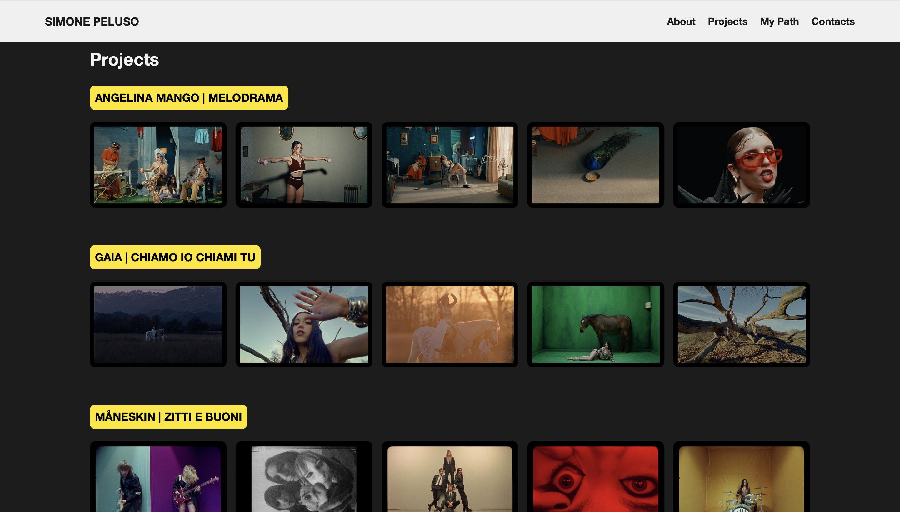
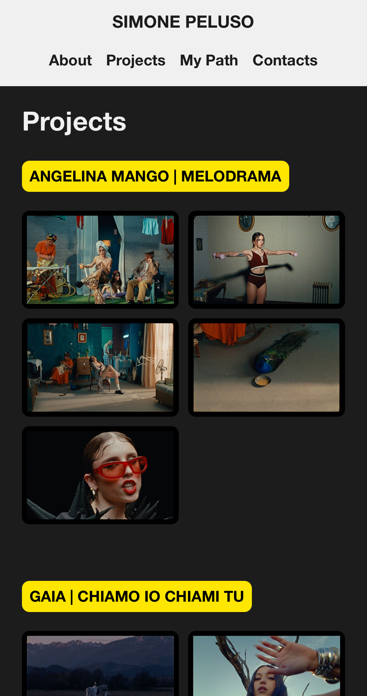
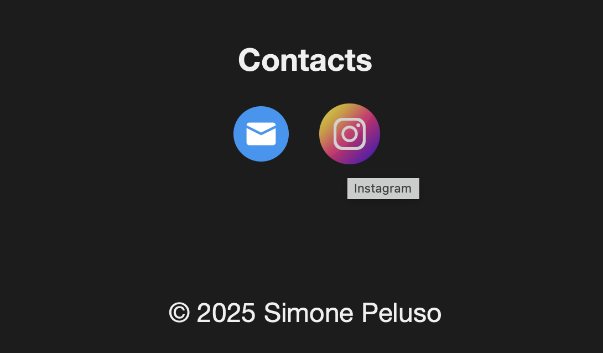
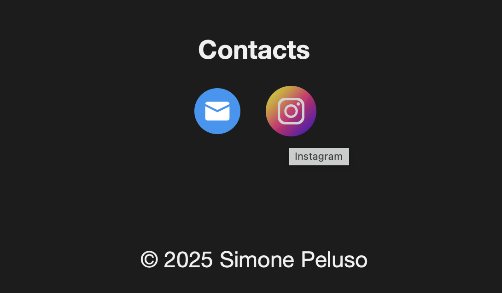
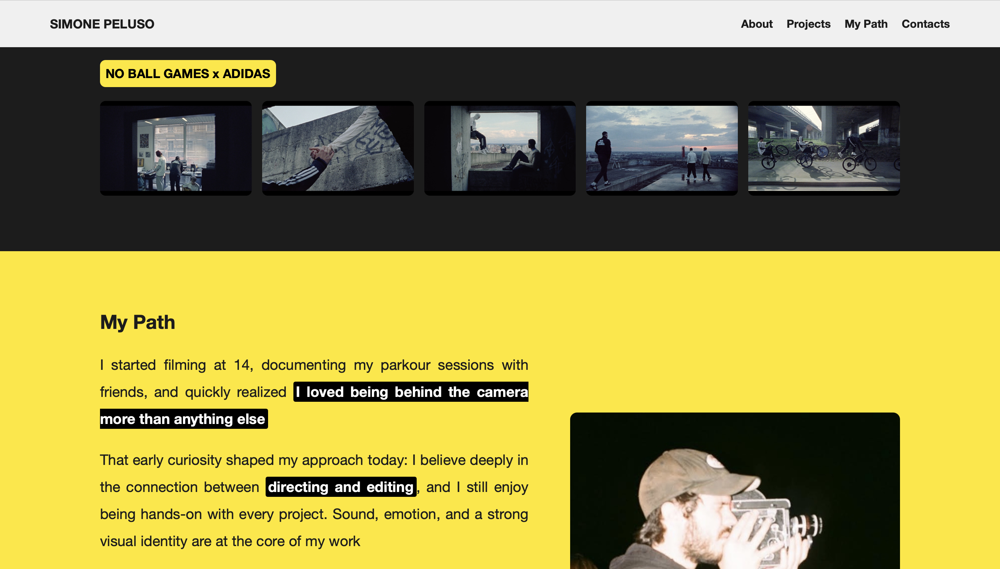

Portfolio Website for a Director
Student: Ekaterina Gorsheneva
Matriculation Number: 68112A
Degree Programme: Corporate Communication
Project website: gorsheneva-ekaterina.github.io
Web Communication Exam Project
Project Idea
A new web presence for an existing film director, designed as a clean and cinematic portfolio
Goals & Target
- Artists, brands and creative agencies
- Strong visual identity
- Fast and intuitive navigation
- Mobile-first experience
Technologies Used
- HTML5 — semantic structure
- CSS3 — Grid, Flexbox, media queries
- JavaScript — custom interactions
Visual Identity
- Consistent layout across all sections
- Three main colors:
- Yellow (#FFE600)
- Dark Grey (#1C1C1C)
- White (#F0F0F0)
- Editorial-style typography
Responsive Layout
The website adapts to different screen sizes using CSS Grid and media queries.
Image Optimization with srcset
Different image sizes are served depending on the device, improving performance and loading speed.
<img
src="./imgs/21.jpg"
srcset="
./imgs/21-small.jpg 480w,
./imgs/21-medium.jpg 800w,
./imgs/21.jpg 1200w"
sizes="(max-width: 768px) 50vw, 20vw"
loading="lazy"
alt="Simone Peluso">
Hover
- Hover effects on navigation links
- Hover feedback on project titles
- Icon scaling on contact links
 

Custom Styled Project Links
Project titles are implemented as links but styled to match the visual identity of the website
- Removed default underline
- Added background highlight
- Hover feedback for interaction
.project h3 a {
text-decoration: none;
background-color: #ffe600;
color: #000;
padding: 8px;
font-weight: 700;
border-radius: 8px;
}
.project h3 a:hover {
background-color: #ffffff;
}
Sticky Header Navigation
The website uses a sticky top navigation that remains visible while scrolling, improving usability and orientation 
Sticky Header Navigation
The website uses a sticky top navigation that remains visible while scrolling, improving usability and orientation
.header {
display: flex;
justify-content: space-between;
align-items: center;
padding: 20px 5%;
position: sticky;
top: 0;
background: #f0f0f0;
z-index: 100;
}
Interactive Image Gallery
The gallery allows users to click on an image to enlarge it using a custom JavaScript overlay
Overlay Closing Logic
The image overlay can be closed both by clicking on the background and by pressing the ESC key
overlay.addEventListener('click', () => {
overlay.classList.remove('active');
document.body.style.overflow = '';
});
document.addEventListener('keydown', e => {
if (e.key === 'Escape') {
overlay.classList.remove('active');
}
});
JavaScript Interaction
A custom image overlay allows users to zoom images without external libraries
images.forEach(img => {
img.addEventListener('click', () => {
overlayImg.src = img.src;
overlay.classList.add('active');
document.body.style.overflow = 'hidden';
});
});
What I Learned
- How to structure a project from scratch
- HTML boilerplates and semantic markup
- Responsive and mobile-first design
- Performance-oriented image handling
- Improving UX with small JavaScript features
Social & Online Presence
- Instagram — main visual platform
- YouTube / Vimeo — video portfolio
- Mailing list for professional updates
- Direct contact via email
Conclusion
This project demonstrates the ability to design, implement and explain a modern responsive website using core web technologies
Thank you!